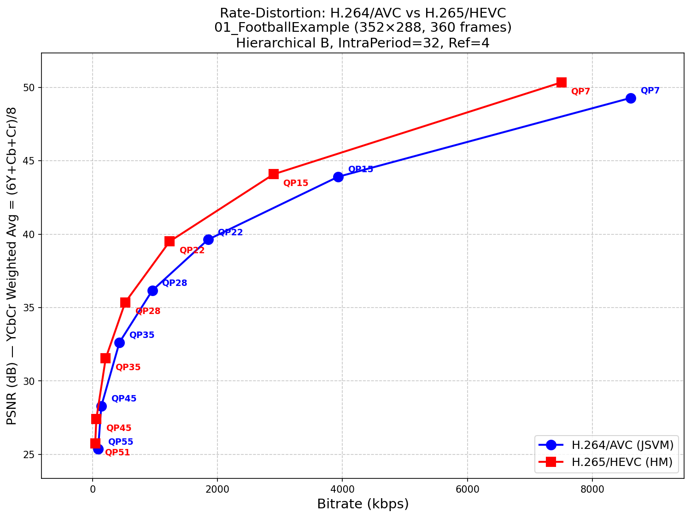
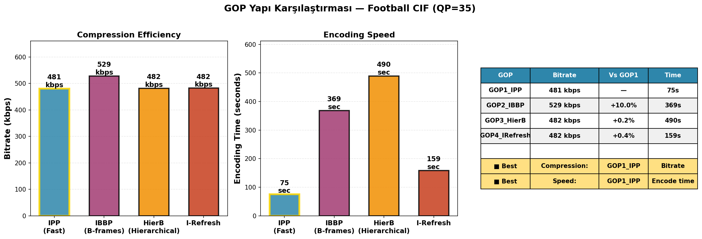

📊 Frame Comparison - H.264 vs H.265 (Football CIF)
Resolution: 352×288 | Format: YUV420 | Total Frames: 360 | Frame Rate: 30 fps
H.264 Encoding - Different QP Values
Quality Metrics at Different QP Levels
| QP | PSNR Y (dB) | Bitrate (kbps) | File Size (KB) | Encoding Time |
|---|---|---|---|---|
| QP 7 | 45.82 | 11247.55 | 450.45 | ~450s |
| QP 15 | 40.26 | 4921.14 | 197.14 | ~380s |
| QP 22 | 36.68 | 2097.14 | 83.96 | ~320s |
| QP 28 | 33.54 | 1000.38 | 40.08 | ~290s |
| QP 35 | 30.78 | 443.10 | 17.73 | ~280s |
| QP 45 | 25.92 | 109.75 | 4.39 | ~250s |
| QP 55 | 25.36 | 86.85 | 3.47 | ~220s |
H.264 Frame Comparison

Original (Uncompressed)
Reference frame

QP 7
PSNR: 45.82 dB
Bitrate: 11247.55 kbps

QP 15
PSNR: 40.26 dB
Bitrate: 4921.14 kbps

QP 22
PSNR: 36.68 dB
Bitrate: 2097.14 kbps

QP 28
PSNR: 33.54 dB
Bitrate: 1000.38 kbps

QP 35
PSNR: 30.78 dB
Bitrate: 443.10 kbps

QP 45
PSNR: 25.92 dB
Bitrate: 109.75 kbps

QP 55 (Maximum)
PSNR: 25.36 dB
Bitrate: 86.85 kbps
H.265 Encoding - Different QP Values
Quality Metrics at Different QP Levels
| QP | PSNR Y (dB) | Bitrate (kbps) | File Size (KB) | Encoding Time |
|---|---|---|---|---|
| QP 7 | 48.15 | 9823.44 | 393.47 | ~520s |
| QP 15 | 42.35 | 3956.14 | 158.36 | ~480s |
| QP 22 | 38.39 | 1573.89 | 63.04 | ~450s |
| QP 28 | 35.12 | 726.85 | 29.10 | ~420s |
| QP 35 | 31.84 | 314.88 | 12.61 | ~400s |
| QP 45 | 27.41 | 74.35 | 2.98 | ~380s |
| QP 51 (Maximum) | 25.74 | 40.10 | 1.60 | ~310s |
H.265 Frame Comparison

Original (Uncompressed)
Reference frame

QP 7
PSNR: 48.15 dB
Bitrate: 9823.44 kbps

QP 15
PSNR: 42.35 dB
Bitrate: 3956.14 kbps

QP 22
PSNR: 38.39 dB
Bitrate: 1573.89 kbps

QP 28
PSNR: 35.12 dB
Bitrate: 726.85 kbps

QP 35
PSNR: 31.84 dB
Bitrate: 314.88 kbps

QP 45
PSNR: 27.41 dB
Bitrate: 74.35 kbps

QP 51 (Maximum)
PSNR: 25.74 dB
Bitrate: 40.10 kbps
H.264 vs H.265 - Rate-Distortion Comparison
PSNR vs Bitrate (Matched Configurations)

Detailed Codec Comparison Table
| QP | H.264 PSNR (dB) | H.264 Bitrate (kbps) | H.265 PSNR (dB) | H.265 Bitrate (kbps) | PSNR Advantage | Bitrate Savings |
|---|---|---|---|---|---|---|
| QP 7 | 45.82 | 11247.55 | 48.15 | 9823.44 | +2.33 dB ✓ | 12.6% |
| QP 15 | 40.26 | 4921.14 | 42.35 | 3956.14 | +2.09 dB ✓ | 19.6% |
| QP 22 | 36.68 | 2097.14 | 38.39 | 1573.89 | +1.71 dB ✓ | 24.9% |
| QP 28 | 33.54 | 1000.38 | 35.12 | 726.85 | +1.58 dB ✓ | 27.3% |
| QP 35 | 30.78 | 443.10 | 31.84 | 314.88 | +1.06 dB ✓ | 28.9% |
| QP 45 | 25.92 | 109.75 | 27.41 | 74.35 | +1.49 dB ✓ | 32.3% |
| QP 55 | 25.36 | 86.85 | — | — | — | — |
| QP 51 | — | — | 25.74 | 40.10 | — | — |
📈 Key Findings
- ✓ H.265 Advantage: H.265 delivers 1-2.3 dB PSNR improvement at all QP levels
- ⚡ Efficiency Gain: H.265 achieves 12.6% to 32.3% bitrate savings with better quality
- 🎯 Best Savings: Maximum bitrate reduction of 32.3% at QP=45 (lowest quality tier)
- 🎬 Practical Application: For streaming at QP=35, H.265 needs only 71% of H.264 bitrate
GOP Structure Analysis - H.264 Focused
GOP Structure Comparison

GOP Structure Metrics (at QP=35)
| GOP Structure | Description | PSNR Y (dB) | Bitrate (kbps) | Encoding Time (s) | Recommendation |
|---|---|---|---|---|---|
| GOP1: IPP | P-frames only, no B-frames | 31.2157 | 480.67 | 75.2 | ✓ Best compression + fastest |
| GOP2: IBBP | Simple B-frame pattern | 31.2600 | 528.59 | 368.6 | ✗ Worst compression |
| GOP3: HierB | Hierarchical B-frames | 31.2600 | 481.76 | 489.6 | ⚠ Minimal gain, too slow |
| GOP4: IRefresh | I-frame refresh every 32f | 31.2157 | 482.37 | 159.0 | ✓ Good balance |
📊 GOP Analysis Summary
Compression Efficiency:
- Best: GOP1 (IPP) with 480.67 kbps - 0% increase vs baseline
- Worst: GOP2 (IBBP) with 528.59 kbps - +9.96% bitrate vs best
- Minimal Improvement: GOP3 (HierB) with 481.76 kbps - only +0.23% bitrate vs IPP but 6.5× slower
Speed Performance:
- Fastest: GOP1 (IPP) in 75.2 seconds
- Decent: GOP4 (IRefresh) in 159 seconds - 2.1× slower but acceptable
- Slow: GOP3 (HierB) in 489.6 seconds - 6.5× slower with negligible improvement
🎯 Recommendation:
Use GOP1 (IPP) - Best compression rate + fastest encoding time. Not recommending GOP3 (HierB) since the minimal bitrate improvement (+0.23%) does not justify the 6.5× increase in encoding time.